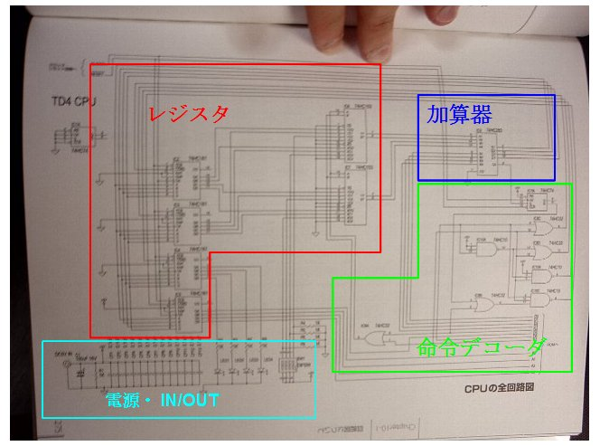

カテゴリ: 読書
- [ Prev ]
- [ Next ]
- [ 読書メモ/「CPUの創りかた」 ]
「CPUの創りかた」は良書だが、実際に手を動かして作るのはかなり大変そうに見えた。
それで一度はあきらめたのだけれど、お風呂に入ってる時「なんで大変なんだろう」と、もやもやとアレコレ考えた結論として、
- ROM部分のDIPスイッチの配線が面倒くさい。
- 全部作った後にテスタでチェックし始める流れ：ソフトウェア開発の世界では単体テストもろくにせず、いきなり結合テスト：ビッグバンテストする流れで、チキン野郎にはとてもじゃないけど出来ない恐怖の流れ。
の２点が大きい。これに至った瞬間、
なら、ROM部分を作らなければスゲー楽にならない？
と頭上にランプが点った。
- アドレスラインにはLEDを付けて、「何番地をFETCHするか」が分かればそれでいい。
- データラインにはインバーター(74HC540)を挟むとしても、DIPスイッチが一基つながっていればそれでいい。
人間がアドレスラインのLEDを目視して、その都度DIPスイッチを組みなおす、いわば「人力ROM」にしてしまえば、思いっきり製作コストが下がる。
となると嬉しい副作用として、クロック回路から発振回路を削れる。なぜなら、人力ROM方針で進む以上、クロックすら人力で入力しないと困ってしまう。発振回路が勝手にクロックを進められても追いつかないからだ。
つまり「人力クロック」オンリーにしてしまう。(リセットはつけときます。)
もう一つの、製作コストは上がってしまうけど、ビッグバンテストを回避するためのアイデアとして「とにかくモジュール分割して、モジュールごとに単体テストを可能にできないか？」というアイデア。
本のほうで紹介されているように、電子工作初心者が見たら全力で引いてしまいそうな、一枚の基盤にCPU部分からROMまで全て集約するような作り方を全力で回避する。
人力ROMモジュール、人力クロックモジュール、CPU部分もOUT(LED4基), IN(DIPスイッチ), CPU(レジスタ+データセレクタ), 加算器, 命令デコーダに細かく分割して、適当なコネクタでモジュール間を接続できるようにする。
これなら、各モジュールごとに独立して動作確認できる。１ステップごとに「作成・テスト・動作確認・デバッグ」のサイクルをリズミカルに繰り返せるし、何より、初心者にとって「動くうれしさ」をよりたくさん、細かいけど確実に味わうことが出来る。
・・・だってさ・・・これから本格的に仕事に就くであろう学生じゃなくて、単に知的好奇心を満たしたいだけの、趣味で挑戦しようとしてる素人ですよ？
やっぱり、「一発で全部作って、ビッグバンテスト」よりは「ちょこっと作ってちょこっと動作確認、ちょこっと動いてやったー！」を繰り返したほうが、気分的にも楽しいと思うのですよ。
ということで、まずCPU部分を大雑把にモジュール化します。
を

のようにモジュール化し、モジュール間は適当なコネクタ(4pinの適当なソケットっぽく使えるやつならそれでOK)で接続できるようにします。
・・・できるといいなぁ。
クロック用の回路も、
を
のように発振回路を削除して単純化します。作る部分が少なければ、それだけトラブルに会う確率も下がります。
これならイケソウ！！・・・とまぁ、自分は勝手に舞い上がったわけです。
で、学生時代を最後に荷物の奥底に押し込んでいた電子工作やってたときの余剰部品をひっくり返したりして、足りない部品のリストアップとかをしてました。
というわけで、明日、秋葉原行って部品そろえて、作り始めてみることにします。
- [ Prev ]
- [ Next ]
- [ Up ]
- [ 読書メモ/「CPUの創りかた」 ]